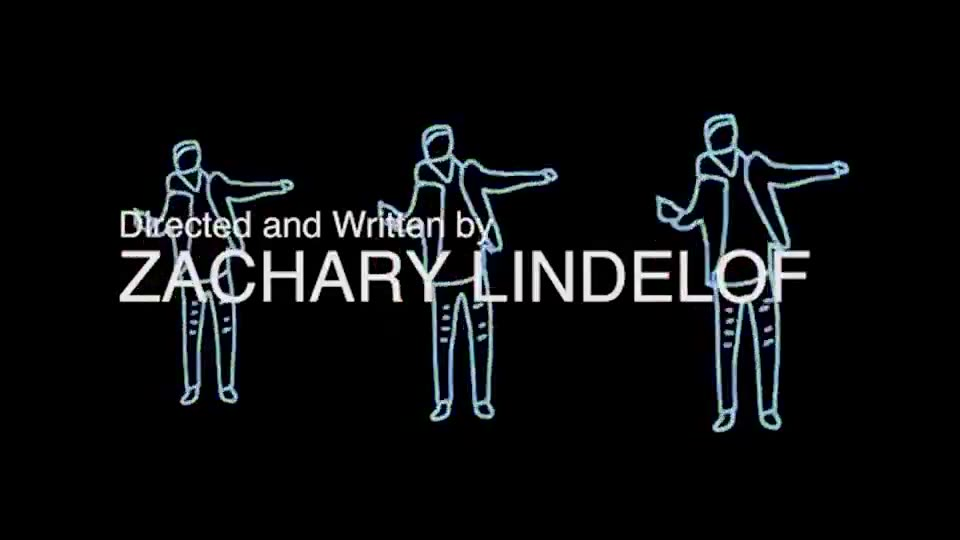
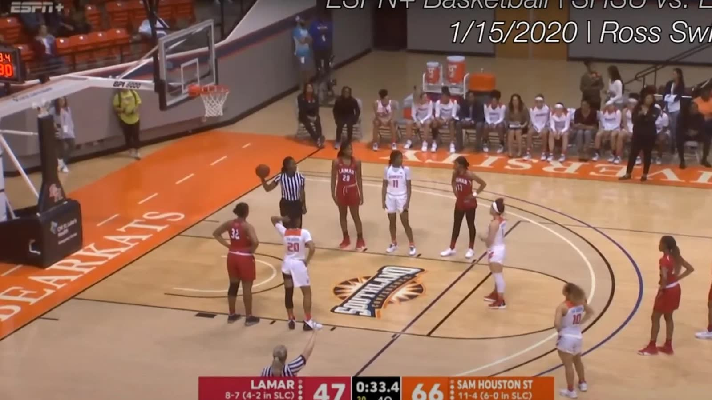

01 / 12
Connection
2019 short. Zachary Lindelof directed, wrote, and edited it. First-Time Filmmaking Sessions finalist. Starring Molly Berg and Christian Hockless.

01 / 12
2019 short. Zachary Lindelof directed, wrote, and edited it. First-Time Filmmaking Sessions finalist. Starring Molly Berg and Christian Hockless.

02 / 12
Still from the work that opens the 2020 directing reel. Editing, screenwriting, and broadcast reels sit beside it. Résumé updated 1.10.2026.

03 / 12
Full-time Walt Disney World PhotoPass photographer since October 2022, after the College Program. Capture Your Moment, support trained, castle trained. More than 500 private sessions.

04 / 12
2017–2021. Technical director and video producer for ESPN3 and ESPN+, on a Tricaster and a Ross board, while he was a full-time film student.

05 / 12
From the non-PhotoPass photography gallery. These are his own frames, not a catalog you order from Disney.

06 / 12
Another frame from the Walt Disney World set in the photography gallery.

07 / 12
PhotoPass photographers in front of the castle. Cast compliments exist for the job. The long set is an email, not a store.

08 / 12
From the “Around the World” set in the stills gallery.

09 / 12
From the cats set in the photography gallery.

10 / 12
One Capture Your Moment session was picked up by USA Today, ABC7 Chicago, and others.

11 / 12
A research studio, still in progress. Reasonable steps, then the work.

12 / 12
Twitch channel for games, charity streams (including Texas Children’s Hospital), and highlight edits.
Disney trademarks belong to The Walt Disney Company and its affiliates. This sheet is Zachary Lindelof’s own record of the work. It is not Disney, and it is not a shop.